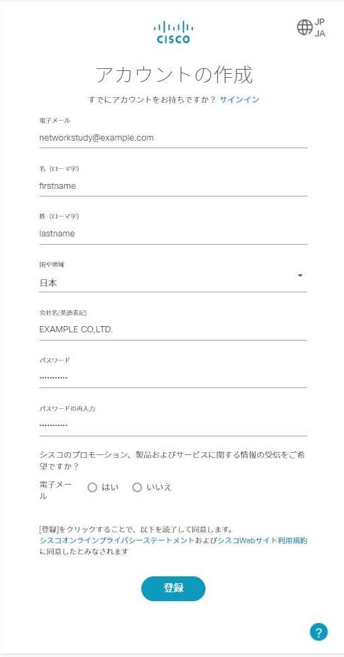
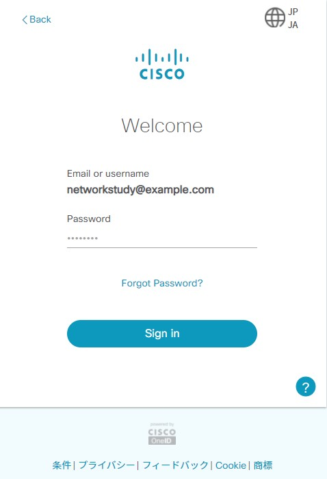
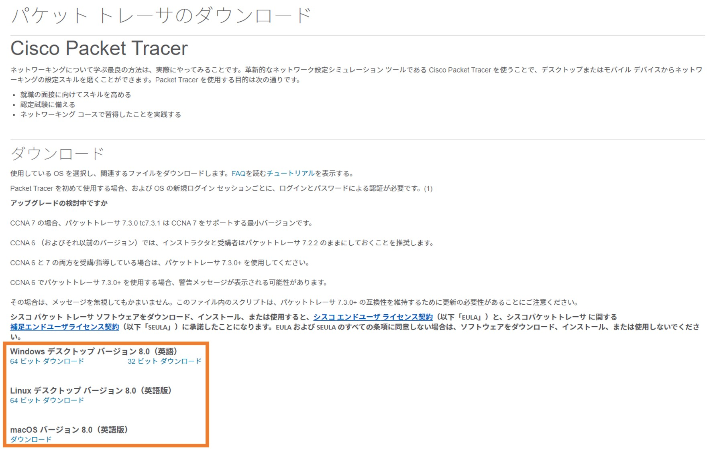

Cisco Packet Tracerを使ってネットワークの勉強をしよう！
Cisco Packet Tracerとは？
Cisco Packet Tracerは，世界最大のネットワーク機器ベンダであるシスコシステムズ社が提供するネットワークシミュレータです。
Windows・Mac OS・Linux・iOSで動作し，アカウントさえ登録すれば誰でも無料で利用することができます。
ソフトウェア上にルータやスイッチなどの機器を配置し，それらにIOSコマンドを入力して設定を行うことができます。
ネットワークが組み上がったら，通信試験を行って実際の動きを確認することができます。
実機を用意することなく，どこでもネットワークの勉強ができる，大変有用なツールです。
Cisco Packet Tracerを使うには
1. Networking Academyのアカウントを取得する
以下のリンクからアカウント作成ページに遷移し，必要な情報を入力してください。
https://identity.cisco.com/ui/tenants/global/v1.0/enrollment-ui

2. ログイン
以下のリンクからCisco IDのログインページに遷移し，1.で登録した情報を入力します。
https://www.netacad.com/portal/resources/packet-tracer

3. インストーラのダウンロード・インストール
遷移したページから，使用中のOS用のインストーラをダウンロードします。

ダウンロードが完了したら，インストーラを起動し，画面の指示に従ってCisco Packet Tracerのインストールを行ってください。
4. Cisco Packet Tracerの起動
初回およびOS再起動後の起動時に，Cisco IDへのログインを求められるので，2.と同様に情報を入力します。